바탕화면 모아
상단 점을 끌어 위치를 바꾸고, 항상 위 표시를 켜거나 끕니다. 대화창을 닫으면 트레이에 남고, 트레이 메뉴에서 완전히 종료합니다.
GETTING STARTED
바탕화면 Mini에서 시작해 개인 업무를 실행하고, MCP로 다른 AI 도구에 연결하는 사용 순서입니다.
Windows용 Workmate Mini가 바탕화면과 트레이에 머뭅니다. 작은 모아를 누르거나 Ctrl + Alt + Space로 대화창을 열어 바로 요청하세요.
상단 점을 끌어 위치를 바꾸고, 항상 위 표시를 켜거나 끕니다. 대화창을 닫으면 트레이에 남고, 트레이 메뉴에서 완전히 종료합니다.
확인할 업무는 작은 말풍선으로 표시합니다. 집중 시간과 알림 쉬기 설정을 함께 적용하며, 알림이 다른 창의 입력을 가로채지 않습니다.
설정에서 Windows 로그인 시 시작을 켤 수 있습니다. 서버가 실행 중이면 연결하고, 꺼져 있으면 Mini가 로컬 서버를 함께 시작합니다.
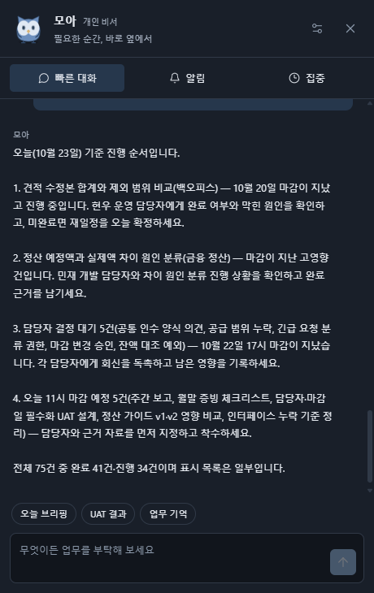
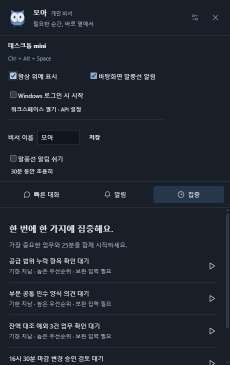
설치형 Mini는 이 PC의 워크스페이스에 연결합니다. Windows가 꺼져 있거나 Mini와 서버가 모두 종료된 동안에는 작업이 실행되지 않습니다. 다른 PC에서는 Python과 업무앱 실행 의존성을 먼저 준비하세요.
workmate/setup.ps1을 실행합니다.Workmate_Mini_실행.cmd를 실행합니다. 로컬 서버가 꺼져 있으면 Mini가 함께 시작합니다.웹 워크스페이스만 열었을 때는 웹 안의 모아를 사용합니다. 바탕화면 상주 기능은 Windows Mini를 실행해 사용합니다. PC 전원이 꺼져 있거나 Mini와 서버가 모두 종료된 동안에는 실행되지 않습니다.
온라인 워크스페이스에서 전문 에이전트, 메일·일정 자료, Excel 검사, 업무 관리와 티켓 UAT를 실행하세요. 자연어 비서를 사용하려면 상단 연결 배지에서 개인 API 주소·키·모델을 연결합니다.
무료 호스팅은 일정 시간 이용하지 않으면 쉬었다가 다시 시작해 첫 접속이 늦어질 수 있습니다. 방문 세션은 비활성 1시간 후 정리되며, 서버 재시작·재배포 시 데이터와 API 연결이 초기화될 수 있습니다. 필요한 산출물은 내려받으세요. 개인 API 사용료는 연결한 제공자의 정책에 따릅니다.
Workmate는 개인이 사용하는 OpenAI 호환 LLM을 연결합니다. 준비할 것은 API 기본 주소, API 키, 모델 ID 세 가지입니다.
https://제공자주소/v1처럼 제공자가 안내한 경로까지 입력합니다.| 제공자 | API 기본 주소 | 모델과 키 |
|---|---|---|
| OpenAI | https://api.openai.com/v1 | API 계정에서 발급한 키와 사용 가능한 모델 ID |
| OpenRouter | https://openrouter.ai/api/v1 | 개인 키와 제공자/모델 ID |
| Ollama · 설치형 | http://localhost:11434/v1 | 키 ollama / 내려받은 모델 이름 |
| 개인·사내 endpoint · 설치형 | 제공자가 안내한 HTTPS 기본 주소 | Bearer API 키와 정확한 모델 ID |
호환 조건은 /chat/completions, Bearer 인증, JSON 객체 응답(response_format: json_object)입니다. Azure 전용 또는 Anthropic 원본 API는 OpenAI 호환 게이트웨이를 이용하세요. 온라인 연결은 OpenAI·OpenRouter·DeepSeek·Groq·Mistral·Google의 공개 호환 주소로 제한하며 개인 서버 주소는 설치형에서 이용합니다.
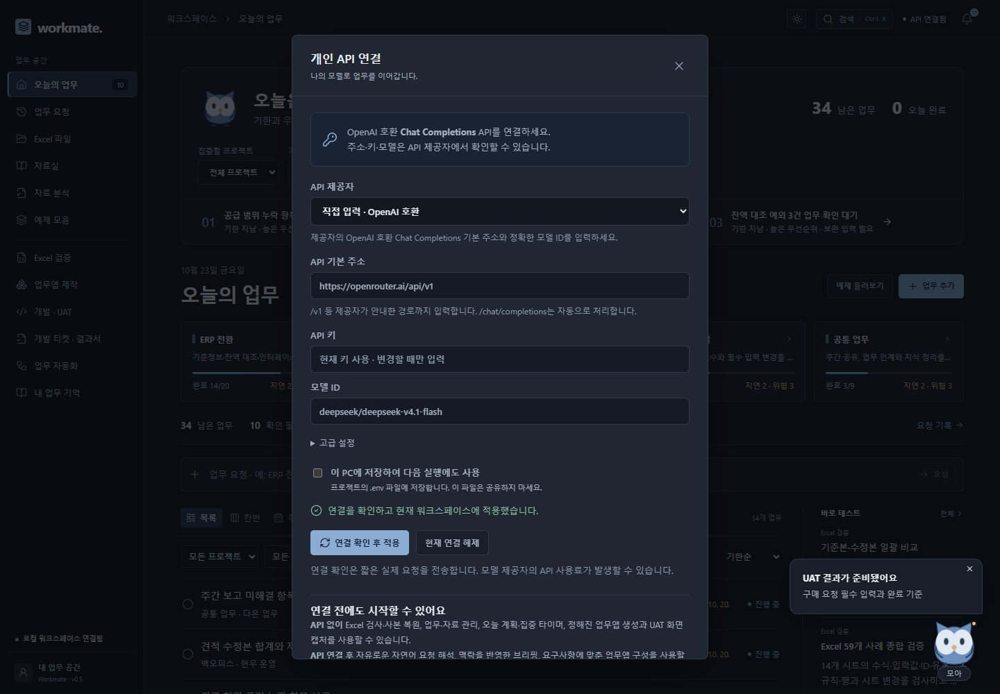
| API 없이 사용 | API 연결 시 확장 |
|---|---|
| Excel 정적 검사와 사본 복원, 업무·자료·기억 관리, 기한 기반 계획과 집중 타이머, 기본 업무앱 생성, 지원 항목의 UAT 화면 검증, 규칙에 따른 문서 검색·비교·보고, 전문 에이전트의 명시 문장 추출·업무 집계, 협업 미션 | 자유로운 자연어 요청 분류, 업무 맥락을 반영한 브리핑과 대화, 요구사항 해석을 통한 업무앱 필드·규칙 구성, 프로필 지침과 선택한 자료에 기반한 전문 분석 |
401 키와 제공자 일치 여부 · 402 잔액·한도 · 404 주소와 모델 ID · 429 요청 제한을 확인하세요. JSON 응답 오류는 모델의 구조화 응답 지원과 추론 설정을 확인합니다. 설치형의 localhost 주소는 Workmate 서버가 실행되는 PC를 뜻합니다.
프로젝트의 .env.example을 .env로 복사해 아래 세 값을 채운 뒤 서버를 다시 시작합니다. 환경 변수로 전달한 값이 파일보다 우선합니다.
WORKMATE_LLM_BASE_URL=https://your-provider.example/v1
WORKMATE_LLM_API_KEY=여기에_개인_API_키
WORKMATE_LLM_MODEL=제공자의_모델_ID.env 파일은 공유하지 않습니다. 현재 연결 해제는 실행 중 연결만 해제하므로 저장한 설정을 없애려면 .env에서 해당 값을 지우고 서버를 다시 시작하세요.
공식 설정 안내: OpenRouter · OpenAI · Ollama
왼쪽 비서 데스크의 네 탭에서 브리핑, 후속 연락, 나의 루틴, 내 글쓰기를 사용합니다. 새 역할을 여러 개 더 만드는 대신 기존 8개 전문 분야에 개인화와 지속적인 업무 상태를 연결합니다.
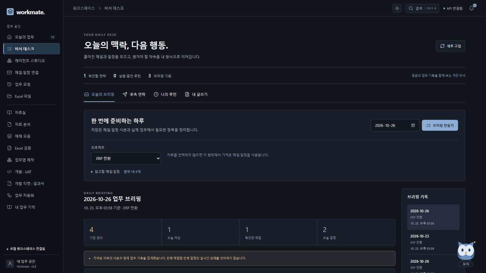
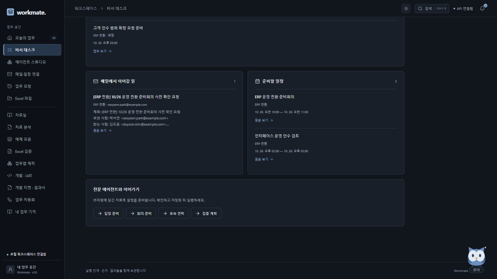
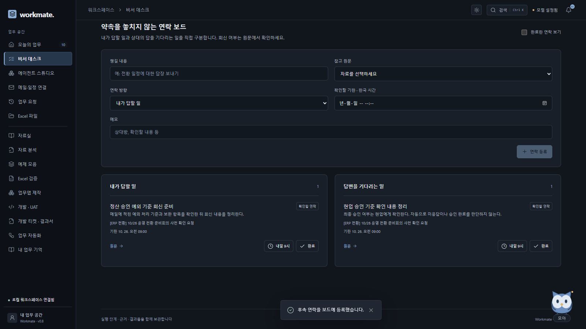
방향·완료 상태는 사용자가 정한 관리 기록입니다. 가져온 일부 사본만으로 전체 대화 이력이나 상대의 미회신을 단정하지 않습니다. 메일을 보내거나 읽음·라벨 상태를 바꾸지 않습니다. 활성 연락은 100개까지 저장합니다.
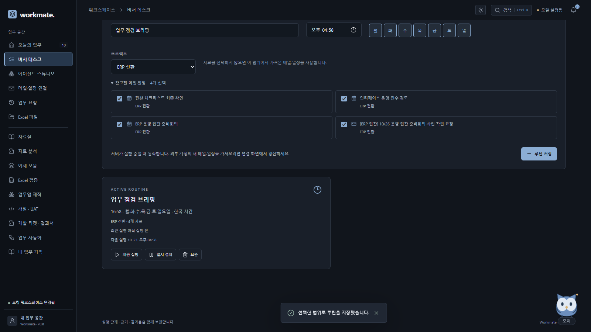
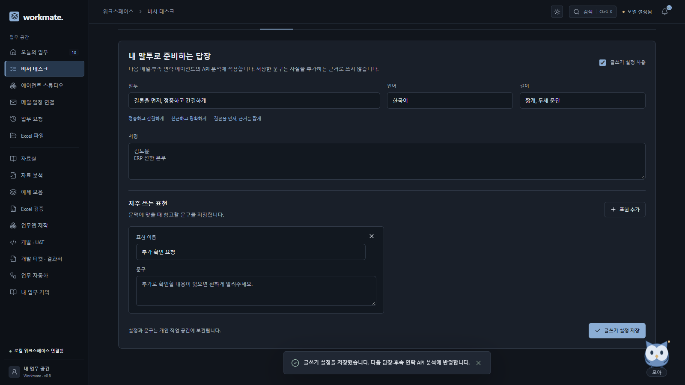
설정은 표현을 위한 지침이며 원문에 없는 사실을 추가하는 근거가 아닙니다. 사용을 끄면 후속 실행에 포함하지 않습니다. 이미 완료된 답장이나 과거 실행의 설정은 바뀌지 않습니다.
메일·일정 연결 → Google에서 Gmail과 Google Calendar를 연결합니다. 읽기 커넥터는 구현되어 있으며, 실제 사용에는 본인의 Google Cloud 앱 등록과 Google 로그인·동의가 필요합니다. Microsoft 연결의 조직 승인과는 별개입니다.
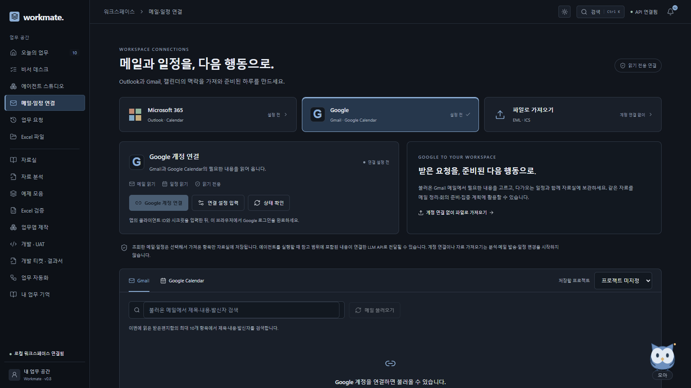
WORKMATE_GOOGLE_CLIENT_ID와 WORKMATE_GOOGLE_CLIENT_SECRET을 서버에 설정할 수도 있습니다. 이 경우 방문자는 비밀값을 입력하지 않고 Google 연결 버튼으로 각자 로그인·동의합니다. 현재 공개 서비스에는 공용 Google 앱이 등록되어 있지 않아 본인의 앱 설정이 필요합니다. 직접 설정한 값으로 덮어쓸 수 있으며 계정 토큰은 여전히 방문자별로 분리됩니다.https://workmate-otpo.onrender.com/api/google/auth/callback, 로컬 기본 실행은 http://127.0.0.1:8765/api/google/auth/callback입니다. 실제 사용 화면에 표시된 주소와 포트가 일치해야 합니다.| 권한 | 사용 목적 |
|---|---|
openid, email | 동의한 계정의 식별 정보와 이메일 표시 |
gmail.readonly | 받은편지함 메일의 제목·발신자·본문·수신 시각 읽기 |
calendar.events.readonly | 기본 캘린더의 일정 읽기 |
Google client secret·접근 토큰·갱신 토큰은 해당 작업 공간의 서버 메모리에만 둡니다. 브라우저 저장소·SQLite·공유 파일에 영구 저장하지 않으며 서버 재시작·세션 만료 후 다시 연결합니다. 개인이 직접 입력한 설정은 다시 입력하고, 서버의 기본 앱이 있으면 각자 로그인·동의를 다시 진행합니다. 연결 해제는 계정 접근을 끝내지만 이미 자료실에 저장한 사본은 별도로 관리합니다. 계정 조회만으로 LLM을 호출하지 않습니다. 사용자가 전문 분석을 실행할 때 선택한 원문이 개인 LLM 제공자로 전달될 수 있습니다.
메일 전송·초안 서버 저장·메일 라벨 변경·외부 일정 생성은 수행하지 않습니다. 아래 메일·일정 영상 후반부에서 Google Calendar의 다음 달 전체·기간 지정 조회와 항목 선택을 확인할 수 있습니다. 목록 조회만으로 자료실에 저장되지는 않으며, 필요한 항목을 선택한 뒤 가져오기를 실행합니다.
공식 안내: 웹 애플리케이션 OAuth · Gmail 권한 범위 · 토큰 만료 · 제한 권한 앱 검증
왼쪽 메일·일정 연결에서 Microsoft 계정을 연결하거나, 계정 연결 없이 EML 메일·ICS 일정 파일을 엽니다. 계정 조회 결과에서는 항목을 선택하며, 파일 가져오기는 선택한 파일 안의 메일·일정을 자료실에 저장합니다.
실행 패키지의 data/examples/outlook/project-mail.eml과 project-calendar.ics로 흐름을 확인할 수 있습니다. 첨부 파일을 자동으로 실행하거나 메일의 외부 이미지를 불러오지 않습니다. 가져온 원문은 자료실에서 직접 확인합니다.
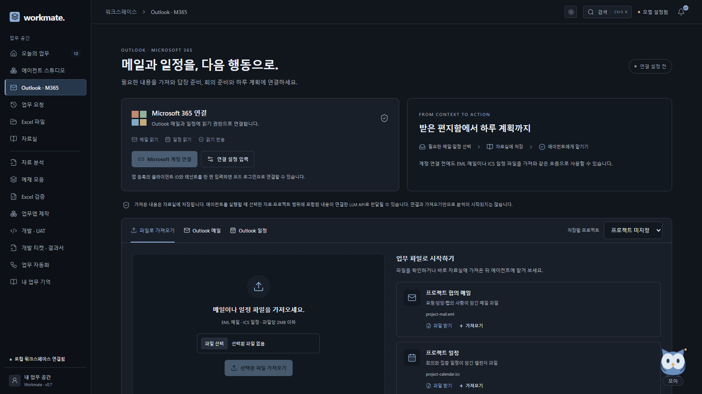
Microsoft 로그인과 조직 승인이 필요합니다. 회사에서 승인한 Microsoft Entra 앱의 클라이언트 ID와 테넌트 ID를 준비하세요. Workmate의 코드 로그인은 Microsoft의 위임된 권한을 사용합니다. Microsoft 비밀번호나 클라이언트 암호를 Workmate에 입력하지 않습니다.
User.Read, Mail.Read, Calendars.Read를 설정합니다. 조직에서 요구하면 관리자 동의를 받습니다.| 권한 | 사용 목적 |
|---|---|
User.Read | 연결한 계정의 기본 정보를 표시합니다. |
Mail.Read | 선택할 메일의 본문·발신자·시각을 읽습니다. |
Calendars.Read | 기간 내 일정의 시간·참석자·본문을 읽습니다. |
offline_access | 현재 서버 세션에서 읽기 연결을 갱신할 수 있게 합니다. 저장소에 토큰을 영구 보관한다는 뜻은 아닙니다. |
접근·갱신 토큰은 해당 방문자의 서버 세션 메모리에만 유지합니다. 서버 재시작이나 세션 만료 후에는 다시 연결합니다. 연결 해제는 Microsoft 연결을 종료하며, 이미 선택해 자료실에 저장한 문서는 별도로 관리합니다. 필요 없는 자료는 자료실에서 삭제하세요. 에이전트 분석을 실행하면 선택한 원문은 사용자가 연결한 LLM API로 전달될 수 있습니다.
현재 안내와 영상은 EML·ICS 파일을 가져와 실행한 결과를 포함합니다. 조직에서 앱 등록을 허용하지 않으면 Microsoft 연결은 관리자 승인 후 진행하고 파일 가져오기를 사용할 수 있습니다. 실제 Microsoft 계정의 로그인·동의 결과는 사용자가 연결할 때 확인합니다.
공식 안내: 공용 클라이언트 설정 · Microsoft 코드 로그인 · 조직의 인증 흐름 정책
| 전문 분야 | 참고 자료와 요청 | 결과 활용 |
|---|---|---|
| 메일 정리·답장 초안 | 가져온 메일을 선택하고 요청·확인 사항과 답장을 정리해 달라고 합니다. | 답장 초안을 복사하거나 EML로 내려받습니다. |
| 회의 사전 준비 | 일정과 관련 메일·문서를 선택합니다. 회의에서 결정할 것과 준비할 질문을 요청합니다. | 안건·자료·질문을 HTML 결과서로 받습니다. |
| 약속·후속 연락 | 약속이 담긴 메일과 프로젝트를 선택해 남은 업무와 회신할 일을 요청합니다. | 원문에 있는 담당자·기한과 기록된 진행 상태를 확인합니다. |
| 일정 맞춤 집중 계획 | 일정 자료와 미완료 업무가 있는 프로젝트를 지정합니다. 날짜·시작/종료·집중/휴식 시간을 설정합니다. | 선택한 일정과 겹치지 않는 블록을 확인하고 ICS로 받습니다. |
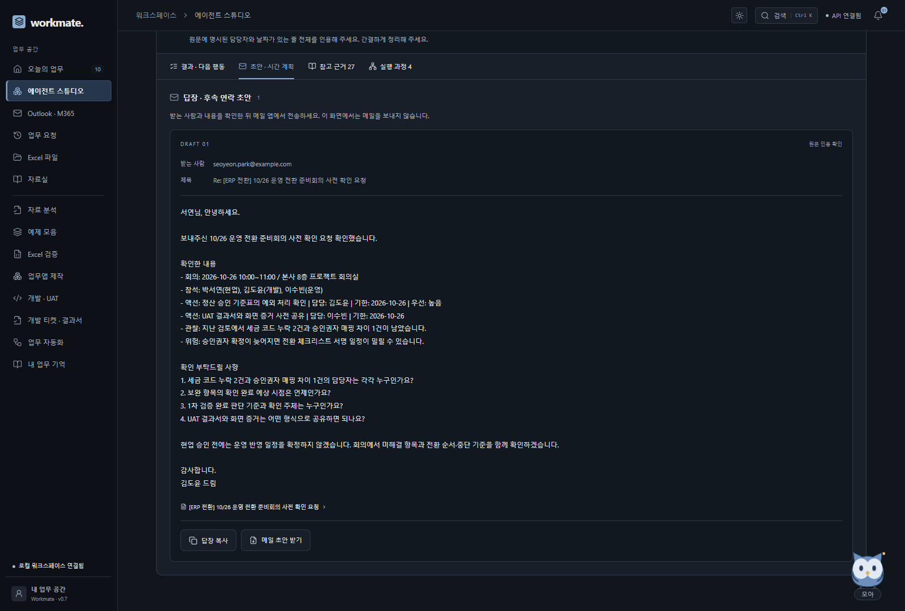
받는 사람, 약속한 날짜, 완료했다고 쓴 내용을 확인하세요. EML은 메일 앱에서 열고 검토한 뒤 직접 전송합니다. Workmate는 자동 발송하지 않습니다. 선택한 기록에 답장이 없다는 이유만으로 실제로 회신을 받지 않았다고 단정하지 않습니다. 원문에 없는 담당자와 기한은 확인 질문으로 남깁니다.
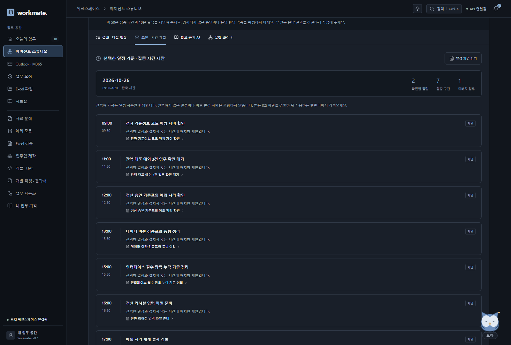
API를 연결하면 문맥에 맞는 답장·준비 자료·추적 내용을 분석합니다. API가 없으면 원문 확인용 요약, 명시 항목 추출과 규칙에 따른 계획을 제공합니다.
왼쪽 MCP 연결에서 외부 AI 도구에 제공할 항목을 선택합니다. MCP는 다른 프로그램이 Workmate의 도구와 자료를 정해진 방식으로 호출하는 연결 규격입니다.
Authorization: Bearer <접근 키> 헤더를 입력합니다. URL에 키를 붙이지 않습니다.| 제공 항목 | 사용 방식 |
|---|---|
| 기본·맞춤 에이전트 | MCP 도구에서 요청문으로 실행하고 해당 연결에서 시작한 결과를 조회합니다. |
| 문서 | 선택한 문서만 MCP 리소스로 읽습니다. |
| 업무앱 | 선택한 앱의 입력 구조와 기록을 읽습니다. MCP에서 기록을 수정하지 않습니다. |
| Excel 검증 | 허용한 기준본·수정본 파일을 비교합니다. 임의의 PC 경로나 외부 URL을 읽지 않습니다. |
{
"url": "http://127.0.0.1:8765/mcp/",
"headers": {"Authorization": "Bearer <발급받은 접근 키>"}
}Streamable HTTP와 사용자 지정 Authorization 헤더를 지원하는 클라이언트에 맞춰 입력합니다. 설정 JSON 구조는 클라이언트마다 다르며, 위 예시는 주소와 인증 헤더를 보여줍니다. OAuth 로그인만 지원하는 클라이언트와는 별도 연동이 필요합니다. 저장소의 scripts/mcp_client_example.py는 공식 Python SDK로 실제 연결과 도구 목록을 확인하는 예제입니다.
공개된 에이전트의 지침과 허용 맥락은 공개 시점의 설정을 사용합니다. 별도로 선택한 문서와 업무앱은 허용한 ID 범위 안의 최신 내용을 읽습니다. 프로필을 수정한 뒤 바뀐 내용을 제공하려면 새 연결을 만드세요. 키 재발급은 이전 키와 그 키로 시작한 실행의 MCP 조회 권한을 무효화합니다. 새 키는 새로 시작한 실행만 조회할 수 있습니다. 철회·만료된 키로는 목록이나 결과도 조회할 수 없습니다. 키에는 해당 연결의 권한이 있으므로 공유 대상과 보관 위치를 직접 관리하세요.
온라인 작업 공간은 방문 세션 단위입니다. 세션 만료·서버 재시작·재배포 후에는 작업 공간과 연결을 다시 준비해야 합니다. 로컬은 현재 PC의 서버가 실행되어 있어야 합니다. 실행에 LLM이 필요하면 워크스페이스에 연결한 개인 API를 사용하며 제공자의 사용료가 적용될 수 있습니다. MCP 연결이 Google·Microsoft 계정의 비밀키나 접근 토큰을 제공하지는 않습니다.
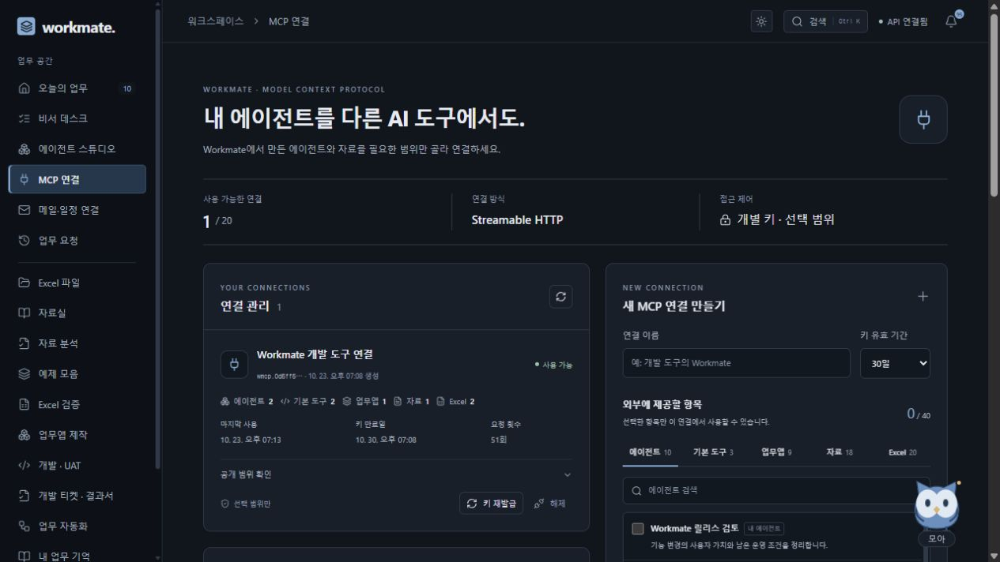
왼쪽 에이전트 스튜디오를 엽니다. 메일 정리·답장 초안, 회의 사전 준비, 약속·후속 연락, 일정 맞춤 집중 계획과 기존 네 가지 전문 분야 중 하나를 선택하거나 내 방식에 맞는 프로필을 만드세요.
| 전문 분야 | 이럴 때 사용하세요 | 확인할 결과 |
|---|---|---|
| 회의 후속 정리 | 회의 메모를 업무로 정리할 때 | 결정, 담당자와 기한, 후속 업무 |
| 의사결정 브리프 | 도입 방식·외주·일정 등 대안을 비교할 때 | 장점과 비용, 기준, 남은 질문 |
| 프로젝트 레이더 | 진행 중인 업무에서 빠진 일을 찾을 때 | 기한 경과, 보완 대기, 담당 미지정 |
| 주간 회고 | 업무·학습·개인 목표를 돌아볼 때 | 최근 완료 기록, 다음 행동, 기억 후보 |
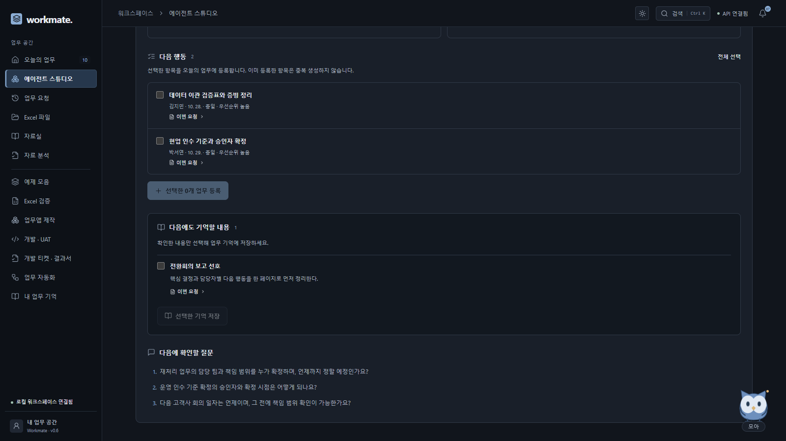
프로젝트를 지정하고 문서를 따로 선택하지 않으면 해당 프로젝트의 자료를 사용합니다. 프로젝트와 문서를 모두 선택하지 않은 회의·의사결정 실행은 요청문을 기준으로 처리하며, 레이더·회고·후속 연락·집중 계획은 등록된 업무를 함께 참고합니다. 메일과 일정은 자료실로 가져온 뒤 참고 자료로 선택하세요. 업무 기억은 사용을 켠 경우에만 분석에 포함합니다. 긴 자료나 많은 기록은 포함한 범위와 제한을 결과에 표시합니다.
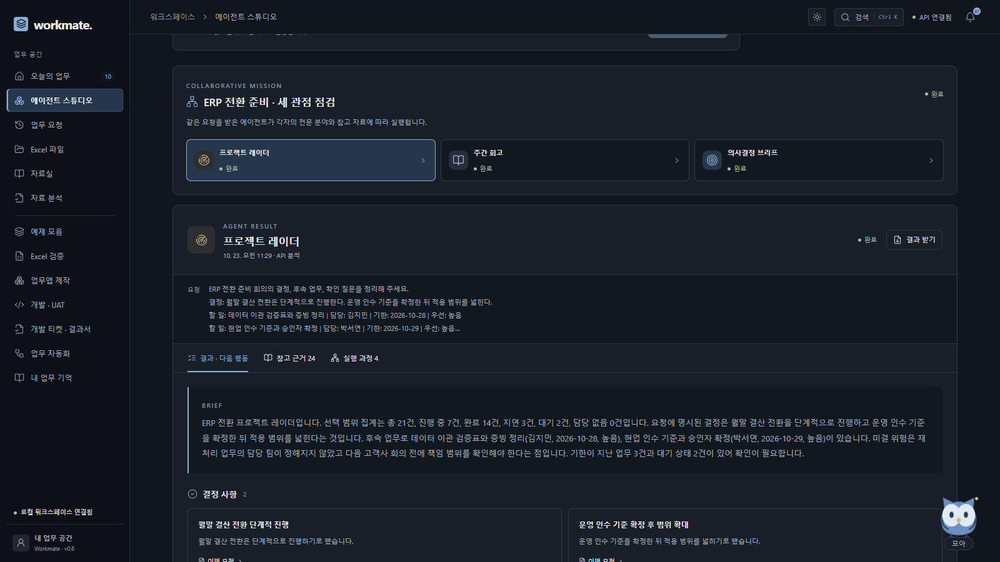
미션은 전문 분야별 실행과 결과를 묶어 보여 줍니다. 에이전트끼리 임의로 메시지를 보내거나 끝없이 작업을 추가하지 않습니다. 공개 서버의 실행 여유가 없으면 진행 중인 작업이 끝난 뒤 다시 실행하세요.
ERP 전환 회의 내용을 정리해 주세요.
결정: 월말 결산 전환은 단계적으로 진행한다.
할 일: 데이터 이관 검증표 정리 | 담당: 김지민 | 기한: 2026-10-28 | 우선: 높음
할 일: 현업 인수 기준 확정 | 담당: 박서연 | 기한: 2026-10-29
대안: 단계별 오픈 | 장점: 위험 분산 | 비용: 운영 2회
이슈: 재처리 담당 팀을 확인해야 한다.
기억: 고객사 자료 공유 원칙 = 발송 전에 숫자와 근거를 함께 확인한다.실제 날짜와 담당자로 바꿔 사용하세요. API를 연결하면 정해진 표시가 없는 자연어 기록도 분석할 수 있습니다. 인용 일치는 해당 문장이 원문에 있다는 확인이며, 요약과 판단의 의미상 정확성까지 보증하지 않습니다.
| 메뉴 | 시작하는 방법 |
|---|---|
| 자료실 | 문서를 작성하거나 TXT·MD를 업로드하고 프로젝트를 지정합니다. |
| 자료 분석 | 자료 질의, 문서 전후 비교, 업무 보고를 선택합니다. 결과에서 원문 근거를 펼쳐 봅니다. |
| 후속 업무 | 분석 결과의 제안 중 필요한 항목만 선택해 등록합니다. |
| 업무 자동화 | 기준 파일·수정본·결과를 저장할 앱을 지정합니다. 검사 후 보완이 필요하면 파일이나 필수 값을 바꾸고 재개합니다. |
| 전체 검색 | Ctrl + K로 업무·문서·업무앱·레코드·기억을 찾습니다. |
2026년 10월 23일 확인한 공식 자료를 바탕으로, 기능의 이름보다 실제 업무가 이어지는 방식을 참고했습니다. 아래 표는 인기 순위가 아니며 해당 제품과의 제휴·계정 연동을 뜻하지 않습니다.
| 제품 · 공식 자료 | 확인한 강점·연결 대상 | Workmate에 반영한 방식 |
|---|---|---|
| Lindy | 메일·일정 중심 업무, 편집 가능한 기억과 재사용 스킬, 반복 루틴 | 정해 둔 자료 범위의 예약 브리핑과 모아 알림. 기존 업무 기억과 내 글쓰기 설정을 다음 실행에 연결 |
| Motion | 업무 소요 시간·기한·우선순위와 캘린더의 빈 시간을 고려한 배치·재배치 | 실제 업무의 기한을 브리핑에 표시하고 기존 집중 계획으로 연결. 선택 일정의 충돌 계산과 ICS 제공 범위로 적용 |
| Reclaim | Google·Outlook 일정과 업무 도구의 맥락, 변경을 먼저 살펴보는 Preview | 원문과 제안을 확인한 다음 행동을 선택. 시간 배치를 검토하고 사용자가 ICS를 가져오는 절차 |
| Notion Custom Agents | 선택한 캘린더 범위·권한, 이벤트와 정해진 시각에 따른 반복 흐름 | 개인 루틴에 요일·시간·프로젝트·문서를 저장하고 결과와 출처를 함께 보관 |
| Gemini Daily Brief | Gmail·Calendar에서 중요한 항목과 다음 행동을 묶는 개인 브리핑 발표 | 가져온 메일·당일 일정·실제 마감 업무를 한 화면에 집계하고 전문 에이전트로 연결 |
| Shortwave | 메일 대화 맥락, 작성 스타일·기억·저장한 요청을 활용하는 답장 준비 | 원문에 연결한 후속 연락 보드와 말투·서명·상용구. 가져오지 않은 대화의 회신 상태는 추정하지 않음 |
Workmate가 직접 제공하는 계정 커넥터는 Google과 Microsoft의 읽기 연결입니다. Motion식 상시 자동 재배치, 외부 제품의 모든 연동, Gemini 발표 기능의 모든 지역 제공을 주장하지 않습니다. 서버 실행·자료 범위·사용자 동의를 기준으로 동작합니다.
모든 영상은 실제 실행 화면이며 한국어 자막이 영상 안에 포함되어 있습니다.
현재는 개인 전용 비서입니다. 온라인은 방문자별 자료·파일·연결을 분리하는 방식이며, 회원가입·사용자별 영속 DB 연동은 향후 확장 범위입니다. 현재 로그인 계정으로 여러 기기의 업무를 이어가거나 영구 복원하는 기능은 제공하지 않습니다.
방문 세션은 비활성 1시간 뒤 정리됩니다. 무료 서버 재시작·재배포·휴면으로 자료와 연결이 초기화될 수 있으므로 결과서를 내려받으세요. Google·Microsoft 연결 계정과 Workmate 방문 세션은 서로 다른 개념입니다. 로컬 설치형은 이 PC의 저장소에 업무를 보관합니다.
온라인에서는 워크스페이스를 바로 엽니다. 내 PC에 설치하려면 실행 패키지를 내려받아 압축을 모두 풀고 workmate 폴더의 setup.ps1을 실행한 뒤 start.cmd를 실행합니다. 설치형 주소는 http://127.0.0.1:8765/입니다. 자세한 절차는 GitHub README에 있습니다. 처음 사용할 때 위의 개인 API 연결 절차를 진행합니다. Windows에서는 Workmate_Mini_실행.cmd 또는 Workmate Mini.exe로 비서를 시작합니다. Python 의존성과 화면 빌드는 setup.ps1에서 준비합니다.
설치형은 브라우저를 닫아도 저장된 작업이 남습니다. 온라인 저장 기간은 위 안내를 확인하세요. 서버가 꺼진 동안에는 주기 자동화와 기한 알림이 실행되지 않습니다.